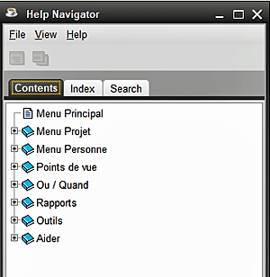

À partir de AIDE>>Sommaire de l'aide, vous pouvez effectuer plusieurs tâches dans le navigateur d'aide, notamment parcourir ou rechercher des rubriques d'aide et imprimer une copie de la rubrique choisie. 1. L'écran Contenu de l'aide affiche la table des matières du système d'aide et à partir de là, vous pouvez choisir les rubriques à afficher, afficher l'index des rubriques ou rechercher certains éléments. 2. Chaque entré avec un symbole de livre indique qu'il existe une liste élargie d'éléments qui peuvent être révélés en double-cliquant sur le livre ou en cliquant une fois sur le symbole +. Double-cliquez sur le livre ouvert ou cliquez une fois sur le symbole - pour fermer le sujet. 3. Un double-clic sur des éléments individuels ouvre la «fenêtre de rubrique» pour cet élément particulier.. LE MENU PRINCIPAL ET LA LISTE DES SUJETS 1. Le menu FICHIER propose des options pour: 2. Le menu AFFICHER offre la possibilité d'afficher les onglets: Contenu, Index ou Recherche. 3. Le menu AIDE affiche les détails de la version actuelle du logiciel d'aide. ONGLET de CONTENU Écrans de sujet 1. Sur chaque écran de sujet, vous pouvez lire le fichier d'aide. 2. Le menu FICHIER vous permet d'imprimer le sujet, de fermer la fenêtre de ce sujet ou de quitter les fichiers d'aide. 3. Le menu ALLER vous permet de revenir en arrière ou en avant dans les sujets que vous avez parcourus dans cette session, et cela peut également être accompli via les touches de raccourci (ALT-gauche ou ALT-droite) ou en utilisant les icônes de flèche. 4. Le menu OUTILS vous permet de revenir à la fenêtre du Navigateurd'aide (si vous l'aviez précédemment fermée) pour rechercher d'autres sujets, Copier le texte en surbrillance (CTL-C), Mettre en évidence tout le texte (CTL-A), Rechercher des mots ou des phrases dans ce sujet et augmenter ou diminuer la taille de la police du sujet. 5. Il existe également des icônes pour rouvrir le Navigateur d'aide, pour revenir en arrière ou en avant dans les sujets d'aide affichées dans cette session et pour imprimer ce sujet. ONGLET d'INDEX 1. Cela fonctionne comme une liste de sélection, ouvrant des sujets ou des mots dans tout le système d'aide lorsque vous tapez les lettres dans la barre d'index. Lorsqu'un mot est exposé, vous pouvez double-cliquer dessus pour afficher le mot dans un sujet d'aide. ONGLET de RECHERCHE 1. Fonctionnant d'une manière plus définie que l'opération Index l'option Recherche permet de respecter la casse et les recherches booléennes, et vous pouvez cliquer sur les résultats pour ouvrier la fenêtre du sujet approprié. Cliquer sur l'icône de l'écran X, ou Fichier >>
Fermer (CTL-W) ou Fichier >> Sorter (ALT-F4) pour quitter la fenêtre du
navigateur d'aide.
|
|
Sujets Relatifs |